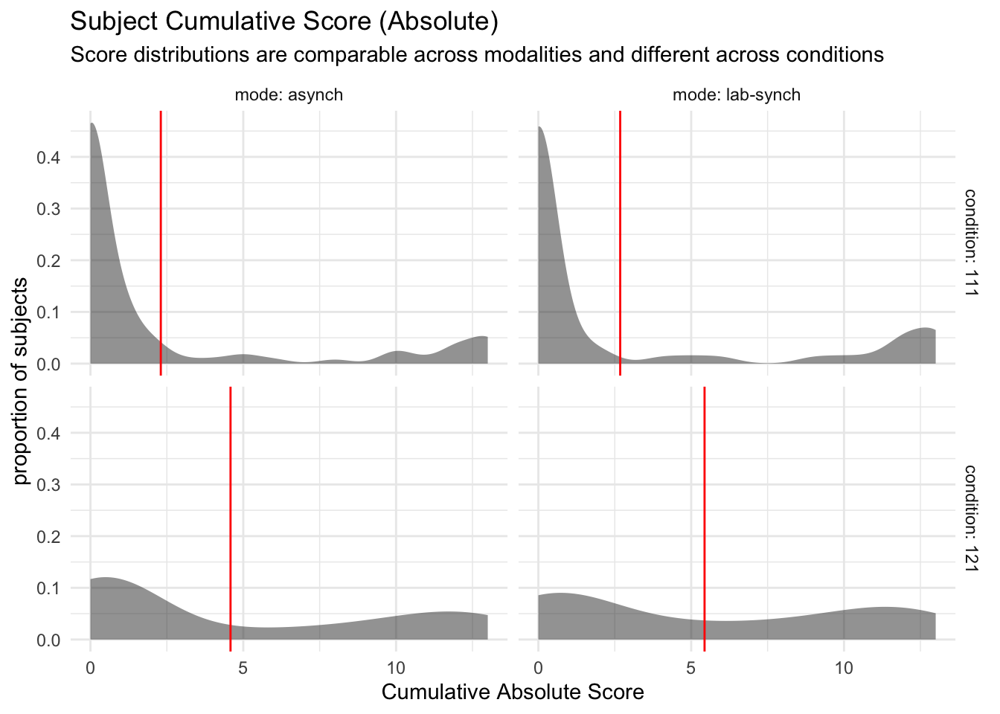
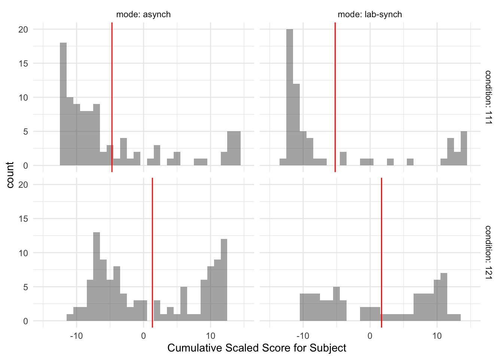
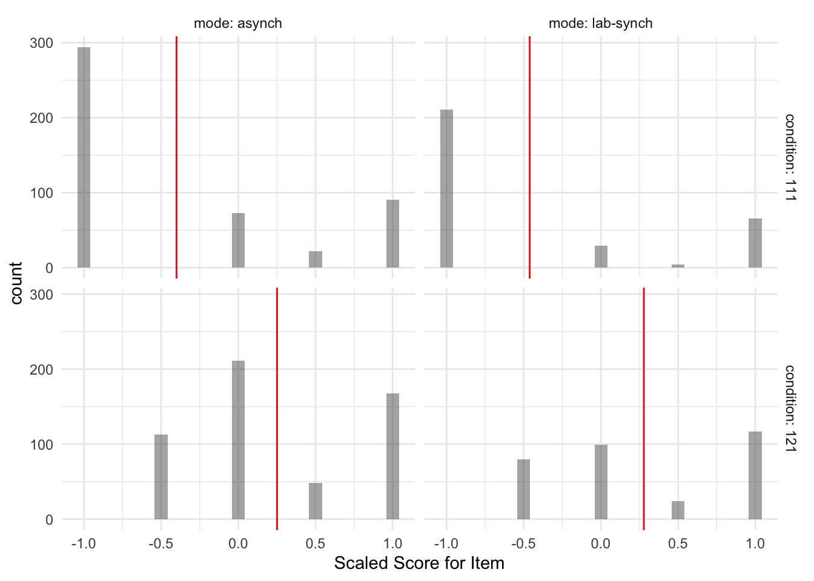

The purpose of this notebook is explore the distribution of dependent variables for Study SGC3A.
Pre-Requisite
Followed By
1_sgc3A_harmonize.qmd
2_sgc3A_rescoring.qmd
CODE
#IMPORT DATA df_items <-read_rds('data/2-scored-data/sgc3a_scored_items.rds')df_subjects <-read_rds('data/2-scored-data/sgc3a_scored_participants.rds')#SEPARATE ITEM DATA BY QUESTION TYPEdf_scaffold <- df_items %>%filter(q <6)df_test <- df_items %>%filter(q >6) %>%filter (q %nin%c(6,9))df_nondiscrim <- df_items %>%filter (q %in%c(6,9))
3.1 Sample
3.1.1 Data Collection
Data was initially collected (in person, SONA groups in computer lab) in Fall 2017. In Spring 2018, additional data were collected after small modifications were made to the experimental platform to increase the size of multiple-choice input buttons, and to add an additional free-response question following the main task block. In Fall 2021, the study was replicated using asynchronous, online SONA pool, with additional participants collected in Winter 2022.
CODE
title ="Participants by Condition and Data Collection Period"cols =c("Control Condition","Impasse Condition","Total for Period")cont <-table(df_subjects$term, df_subjects$condition)cont %>%addmargins() %>%kbl(caption = title, col.names = cols) %>%kable_classic()
Participants by Condition and Data Collection Period
Descriptive Statistics of Participant Age and Gender
min
Q1
median
Q3
max
mean
sd
n
missing
female
lab
18
19
20
21
33
20.4
2.12
126
0
78
online
18
20
20
21
31
20.6
2.00
204
0
137
For in-person collection, 126 participants (60 % female ) undergraduate STEM majors at a public American University participated in person in exchange for course credit (age: 18 - 33 years). Participants were randomly assigned to one of two experimental groups.
For online replication 204 participants (70 % female ) undergraduate STEM majors at a public American University participated online, asynchronously in exchange for course credit (age: 18 - 31 years). Participants were randomly assigned to one of two experimental groups.
CODE
report_participants(df_subjects, education ="schoolyear", sex ="gender", group ="mode")
Cumulative scores indicate the response accuracy by a particular participant across all discriminant items (n=13) in the graph comprehension task.
3.2.1.1 Cumulative Absolute Score
Recall from Section 2.1.2.1 that the absolute score (following the dichotomous scoring approach) s_ABS indicates if the subject’s response for a particular item was perfectly correct: whether they selected all correct answer options and no others (excluding certain allowed exceptions, such as also selecting the data point referenced in the question). The absolute score for an individual item is either 0 or 1. When summarized across the entire set of discriminant items, the cumulative absolute score for an individual subject ranges from [0,13].
Descriptive Statistics of Response Accuracy (Cumulative Item Absolute Score)
min
Q1
median
Q3
max
mean
sd
n
missing
lab
0
0
1
9
13
4.08
5.05
126
0
online
0
0
1
8
13
3.51
4.87
204
0
For in person collection, cumulative absolute scores (n = 126) range from 0 to 13 with a mean score of (M = 4.08, SD = 5.05).
For online replication, (online) cumulative accuracy scores (n = 204) range from 0 to 13 with a slighly lower mean score of (M = 3.51, SD = 4.87).
CODE
#VISUALIZE distribution of response accuracy across SUBJECTS#HISTOGRAMstats = df_subjects %>%group_by(condition, mode) %>% dplyr::summarise(mean =mean(s_ABS))gf_density(~s_ABS, data = df_subjects) %>%gf_facet_grid(condition~mode, labeller = label_both) %>%gf_lims(x =c(0, 13)) %>%gf_vline(data = stats, xintercept =~mean, color ="red") +labs(x ="Cumulative Absolute Score",y ="proportion of subjects",title ="Subject Cumulative Score (Absolute)",subtitle ="Score distributions are comparable across modalities and different across conditions") +theme_minimal()

CODE
#RIDGEPLOT# ggplot(data = df_subjects, aes(x = s_NABS, y = mode)) +# geom_density_ridges() + xlim(0,13)+# facet_wrap(~condition, labeller = label_both) +# labs(x = "Cumulative Absolute Score",# y = "proportion of subjects",# title = "Subject Cumulative Score (Absolute)",# subtitle = "Score distributions are comparable across modalities and different across conditions") + # theme_minimal()
Decision
Condition appears to exert a positive influence on Cumulative Absolute Score acrosss data collection modalities.
3.2.1.2 Cumulative Scaled Scores
The Cumulative Scaled score s_SCALED summarizes the scaled score on the 13 strategy-discriminant questions, for each subject The range is from -13 (all orthogonal) to 13 (all triangular). Recall that the s_SCALED score for an item is a numeric representation of the strategy-consistent response, scaled from -1 to +1, where “Orthogonal” = -1, “Satisfice” = -1, “Triangular” = 1, “Tversky” = 0.5, “both tri + orth” = 0.5, “reference” = 0, “blank” = 0, “frenzy” = 0, “?” = 0.
Most importantly, the Scaled score gives us a way of quantitatively examining how correctly a participant interpreted the coordinate system across the entire set of items. It offers a more nuanced look into performance than absolute score
Descriptive Statistics of Response Accuracy (Cumulative Scaled Score)
min
Q1
median
Q3
max
mean
sd
n
missing
lab
-13
-11.9
-6
9.75
13
-2.13
10.05
126
0
online
-13
-9.0
-6
8.00
13
-2.03
9.12
204
0
For in person collection, cumulative absolute scores (n = 126) range from -13 to 13 with a mean score of (M = -2.13, SD = 10.05).
For online replication, (online) cumulative accuracy scores (n = 204) range from -13 to 13 with a slighly lower mean score of (M = -2.03, SD = 9.12).
CODE
#VISUALIZE distribution of response accuracy across SUBJECTS#HISTOGRAMstats = df_subjects %>%group_by(condition, mode) %>% dplyr::summarise(mean =mean(s_SCALED))gf_density(~s_SCALED, data = df_subjects, binwidth =1) %>%gf_facet_grid(condition~mode, labeller = label_both) %>%gf_lims(x =c(-13, 13)) %>%gf_vline(data = stats, xintercept =~mean, color ="red") +labs(x ="Cumulative Scaled Score",y ="proportion of subjects",title ="Subject Cumulative Score (Scaled)",subtitle ="Score distributions are comparable across modalities and different across conditions") +theme_minimal()

Decision
Condition appears to exert a positive influence on Scaled Score across data collection modalities.
3.2.2 Item Scores
Item scores indicate the response accuracy by a participant on each individual question discriminant question (n=13) in the graph comprehension task.
3.2.2.1 Item Absolute Score
CODE
x <- df_items %>%mutate(score =as.logical(score_ABS))title ="Proportion of Correct Items By Condition (Lab)"item.contingency <- df_items %>%filter(mode =="lab-synch") %>%select(score_ABS, condition) %>%table() %>%prop.table() %>%addmargins()item.contingency %>%kbl (caption = title) %>%kable_classic()
Proportion of Correct Items By Condition (Lab)
111
121
Sum
0
0.344
0.268
0.613
1
0.148
0.240
0.387
Sum
0.492
0.508
1.000
CODE
title ="Proportion of Correct Items By Condition (Online)"item.contingency <- df_items %>%filter(mode =="asynch") %>%select(score_ABS, condition) %>%table() %>%prop.table() %>%addmargins()item.contingency %>%kbl (caption = title) %>%kable_classic()
Proportion of Correct Items By Condition (Online)
111
121
Sum
0
0.342
0.307
0.649
1
0.128
0.223
0.351
Sum
0.471
0.529
1.000
Across both data collection modalities, the proportion of correct answers is greater in the impasse vs. control condition.
CODE
#VISUALIZE distribution of response accuracy across ITEMS#HISTOGRAMstats = df_items %>%group_by(condition, mode) %>% dplyr::summarise(mean =mean(score_niceABS))gf_props(~score_niceABS, data = df_items) %>%gf_facet_grid(condition~mode, labeller = label_both) +labs(x ="Item Absolute Score",title ="Item Absolute Score",subtitle="Across modalities, the impasse condition yielded more correct responses")+theme_minimal()
3.2.2.2 Item Scaled Score
At the item level, the scaled score gives us a numeric measure of correctness of interpretation, ranging from -1 to 1.
Descriptive Statistics of Item Response Accuracy (Scaled Score)
min
Q1
median
Q3
max
mean
sd
n
missing
lab
-1
-1
0
1
1
-0.084
0.870
1890
0
online
-1
-1
0
1
1
-0.077
0.832
3060
0
CODE
#VISUALIZE distribution of response accuracy across ITEMS#HISTOGRAMstats = df_items %>%group_by(condition, mode) %>% dplyr::summarise(mean =mean(score_SCALED))gf_density(~score_SCALED, data = df_items) %>%gf_facet_grid(condition~mode, labeller = label_both) %>%gf_vline(data = stats, xintercept =~mean, color ="red") +labs(x ="Scaled Score for Item",y ="Proportion of Items",title ="Distribution of Accuracy per Item (Scale Score)",subtitle="The impasse condition shifts density toward the positive score")+theme_minimal()

3.2.2.3 Item Interpretation Scores
CODE
#VISUALIZE distribution of interpretations across all ITEMS#REORDER INTERPRETATION LEVELSdf_items$interpretation <-factor(df_items$interpretation, levels =c("Triangular", "Tversky", "both tri + orth", "blank", "?", "frenzy","reference","Satisfice", "Orthogonal")) title ="Proportion of Interpretations Across Items Items By Condition (Lab)"item.contingency <- df_items %>%filter(mode =="lab-synch") %>%select(interpretation, condition) %>%table() %>%prop.table() %>%addmargins()item.contingency %>%kbl (caption = title) %>%kable_classic()
Proportion of Interpretations Across Items Items By Condition (Lab)
111
121
Sum
Triangular
0.094
0.195
0.288
Tversky
0.004
0.017
0.021
both tri + orth
0.061
0.056
0.116
blank
0.008
0.034
0.042
?
0.025
0.054
0.079
frenzy
0.002
0.005
0.007
reference
0.001
0.004
0.005
Satisfice
0.000
0.028
0.028
Orthogonal
0.297
0.116
0.414
Sum
0.492
0.508
1.000
CODE
title ="Proportion of Interpretations Across Items Items By Condition (Online)"item.contingency <- df_items %>%filter(mode =="asynch") %>%select(interpretation, condition) %>%table() %>%prop.table() %>%addmargins()item.contingency %>%kbl (caption = title) %>%kable_classic()
Proportion of Interpretations Across Items Items By Condition (Online)
111
121
Sum
Triangular
0.078
0.175
0.253
Tversky
0.011
0.023
0.035
both tri + orth
0.056
0.061
0.118
blank
0.013
0.055
0.068
?
0.050
0.066
0.116
frenzy
0.002
0.001
0.003
reference
0.000
0.002
0.002
Satisfice
0.000
0.024
0.024
Orthogonal
0.260
0.122
0.382
Sum
0.471
0.529
1.000
CODE
#PROPORTIONAL BAR CHARTgf_propsh(~interpretation, data = df_items, fill =~mode) %>%gf_facet_grid(mode~condition, labeller = label_both) +labs(x ="Interpretation for Item",title ="Proportion of Interpretations Across Items",subtitle="Impasse Condition yields shift from Orthogonal to alternative interpretations")+theme_minimal()+theme(legend.position ="none")
TODO: Investigate super high and super low response times..
TODO: Investigate appropriate models for response time data. (see: https://lindeloev.github.io/shiny-rt/).
Especially see https://lindeloev.github.io/shiny-rt/ for ideas on modelling reaction time data
3.3.1 Time on Study
CODE
#DESCRIBE distribution of response timetime.stats <-rbind("lab"= df_subjects %>%filter(mode =='lab-synch') %>%select(totaltime_m) %>%unlist() %>%favstats(),"online"= df_subjects %>%filter(mode =='asynch') %>%select(totaltime_m) %>%unlist() %>%favstats())title ="Descriptive Statistics of Response Latency (Time on Study)"time.stats %>%kbl(caption = title) %>%kable_classic()
Descriptive Statistics of Response Latency (Time on Study)
min
Q1
median
Q3
max
mean
sd
n
missing
lab
6.01
10.50
12.2
14.4
23.9
12.8
3.37
126
0
online
2.91
9.18
11.5
15.0
111.0
13.4
9.21
204
0
Total time on study for in person subjects (n = 126) ranged from 6.01 to 23.86 minutes with a mean duration of (M = 12.8, SD = 3.37).
Total time on study for online replication subjects (n = 204) ranged from 2.91 to 111.02 minutes with a mean duration of (M = 13.37, SD = 9.21).
CODE
#VISUALIZE distribution of response timeplab <-gf_dhistogram(~totaltime_m, data = df_subjects) %>%gf_vline(xintercept =~time.stats["lab",]$mean, color ="black") %>%gf_fitdistr(dist="gamma", color="red")+labs(title="Lab", x ="Total Time (mins)", y ="% subjects") +theme_minimal()ponline <-gf_dhistogram(~totaltime_m, data = df_subjects) %>%gf_vline(xintercept =~time.stats["online",]$mean, color ="black") %>%gf_fitdistr(dist ="gamma", color="red")+labs(title="Online", x ="Total Time (mins)", y ="% subjects") +theme_minimal()plot <-ggarrange(plab, ponline, common.legend =TRUE, nrow =1, ncol =2)annotate_figure(plot, top =text_grob("Total Time by Study Mode",color ="black", face ="bold", size =14),bottom =text_grob("fit by Gamma distribution", face ="italic", size =10))
TODO consider log transform of response latency datasee archive sgc3A_participants.Rmd
3.3.2 Time on Question
TODO time on question
3.4 Due Diligence
3.4.1 Data Collection Mode on Absolute Score
Does Mode Change Effect of Condition on Score?
To verify that the data collected in the lab and remotely online are comparable, we perform a t-test on group means of ABSOLUTE SCORE for each condition, and examine whether data collection modality is a significant predictor of variance in absolute score
CODE
paste("Two Sample T-Test for S_ABS LAB vs. ONLINE control condition")
[1] "Two Sample T-Test for S_ABS LAB vs. ONLINE control condition"
Welch Two Sample t-test
data: s_ABS by mode
t = -0.5, df = 120, p-value = 0.6
alternative hypothesis: true difference in means is not equal to 0
95 percent confidence interval:
-1.84 1.09
sample estimates:
mean in group asynch mean in group lab-synch
2.30 2.68
CODE
paste("Two Sample T-Test for S_ABS LAB vs. ONLINE impasse condition")
[1] "Two Sample T-Test for S_ABS LAB vs. ONLINE impasse condition"
Welch Two Sample t-test
data: s_ABS by mode
t = -1, df = 135, p-value = 0.3
alternative hypothesis: true difference in means is not equal to 0
95 percent confidence interval:
-2.435 0.727
sample estimates:
mean in group asynch mean in group lab-synch
4.58 5.44
CODE
paste("OLS Linear Regression Predicting Absolute Score by Data Collection Mode")
[1] "OLS Linear Regression Predicting Absolute Score by Data Collection Mode"
CODE
summary(lm(data = df_subjects, formula = s_ABS ~ mode ))
Call:
lm(formula = s_ABS ~ mode, data = df_subjects)
Residuals:
Min 1Q Median 3Q Max
-4.08 -3.51 -2.51 4.49 9.49
Coefficients:
Estimate Std. Error t value Pr(>|t|)
(Intercept) 3.510 0.346 10.14 <2e-16 ***
modelab-synch 0.570 0.560 1.02 0.31
---
Signif. codes: 0 '***' 0.001 '**' 0.01 '*' 0.05 '.' 0.1 ' ' 1
Residual standard error: 4.94 on 328 degrees of freedom
Multiple R-squared: 0.00314, Adjusted R-squared: 0.000105
F-statistic: 1.03 on 1 and 328 DF, p-value: 0.31
Both t-tests are non-significant with 95% confidence intervals including 0. Further, an OLS linear regression model predicting cumulative absolute score indicates that data collection mode is not a significant predictor, explaining only 0.01% of variance in absolute score, F(1,328) = 1.03, p > 0.05.
Decision
It is reasonable to infer that data from both in-person and remote studies arise from the same data generating process.
3.4.2 Data Collection Mode on Cumulative Score
Are the by-condition group means significantly different by data collection modality?
To verify that the data collected in the lab and remotely online are comparable, we perform a t-test on group means of SCALED SCORE for each condition.
CODE
paste("Two Sample T-Test for s_SCALED LAB vs. ONLINE control condition")
[1] "Two Sample T-Test for s_SCALED LAB vs. ONLINE control condition"
Welch Two Sample t-test
data: s_SCALED by mode
t = 0.3, df = 116, p-value = 0.7
alternative hypothesis: true difference in means is not equal to 0
95 percent confidence interval:
-2.50 3.52
sample estimates:
mean in group asynch mean in group lab-synch
-5.62 -6.13
CODE
paste("Two Sample T-Test for s_SCALED LAB vs. ONLINE impasse condition")
[1] "Two Sample T-Test for s_SCALED LAB vs. ONLINE impasse condition"
Welch Two Sample t-test
data: s_SCALED by mode
t = -0.4, df = 130, p-value = 0.7
alternative hypothesis: true difference in means is not equal to 0
95 percent confidence interval:
-3.29 2.10
sample estimates:
mean in group asynch mean in group lab-synch
1.16 1.75
CODE
paste("OLS Linear Regression Predicting Scaled Score by Data Collection Mode")
[1] "OLS Linear Regression Predicting Scaled Score by Data Collection Mode"
CODE
summary(lm(data = df_subjects, formula = s_SCALED ~ mode ))
Call:
lm(formula = s_SCALED ~ mode, data = df_subjects)
Residuals:
Min 1Q Median 3Q Max
-10.97 -7.97 -3.92 10.03 15.13
Coefficients:
Estimate Std. Error t value Pr(>|t|)
(Intercept) -2.0319 0.6641 -3.06 0.0024 **
modelab-synch -0.0951 1.0747 -0.09 0.9295
---
Signif. codes: 0 '***' 0.001 '**' 0.01 '*' 0.05 '.' 0.1 ' ' 1
Residual standard error: 9.48 on 328 degrees of freedom
Multiple R-squared: 2.39e-05, Adjusted R-squared: -0.00302
F-statistic: 0.00783 on 1 and 328 DF, p-value: 0.93
Both t-tests are non-significant with 95% confidence intervals including 0. Further, an OLS linear regression model predicting cumulative scaled score indicates that data collection mode is not a significant predictor, explaining less than 0.001% of variance in absolute score, F(1,328) = 0.0078, p > 0.05.
Decision
It is reasonable to infer that data from both in-person and remote studies arise from the same data generating process.
---# title: 'Exploration'subtitle: 'Study SGC3A | 3 Exploration'# author: 'Amy Rae Fox'# always_allow_html: true # header-includes:# - \usepackage{amsmath}# output:# html_document:# theme: yeti# code_folding: hide# fig_caption: yes# number_sections: yes# toc: yes# toc_depth: 4# toc_float:# collapsed: no# smooth_scroll: yes# pdf_document: # toc: true# toc_depth: 3# latex_engine: xelatex# font-family: "DejaVu Sans"# mainfont: "DejaVu Sans"---\newpage# Exploration {#sec-SGC3A-exploration}**THIS NOTEBOOK IS INCOMPLETE**```{r}#| label: SETUP#| echo : true#| warning : false#| message : falselibrary(tidyverse) #ALL THE THINGSlibrary(kableExtra) #printing tables library(mosaic) #simple descriptives [favstats]library(Hmisc) # %nin% operatorlibrary(ggpubr) #arrange plotslibrary(report) #easystats reportinglibrary(vcd) #mosaicplots#set some output optionslibrary(dplyr, warn.conflicts =FALSE)options(dplyr.summarise.inform =FALSE)options(ggplot2.summarise.inform =FALSE)options(scipen=1, digits=3)```*The purpose of this notebook is explore the distribution of dependent variables for Study SGC3A.*+------------------------+---------------+| Pre-Requisite | Followed By |+========================+===============+| 1_sgc3A_harmonize.qmd\ | || 2_sgc3A_rescoring.qmd | |+------------------------+---------------+```{r}#| label: IMPORT-DATA#| echo : true#| warning : false#| message : false#IMPORT DATA df_items <-read_rds('data/2-scored-data/sgc3a_scored_items.rds')df_subjects <-read_rds('data/2-scored-data/sgc3a_scored_participants.rds')#SEPARATE ITEM DATA BY QUESTION TYPEdf_scaffold <- df_items %>%filter(q <6)df_test <- df_items %>%filter(q >6) %>%filter (q %nin%c(6,9))df_nondiscrim <- df_items %>%filter (q %in%c(6,9))```## Sample### Data CollectionData was initially collected (in person, SONA groups in computer lab) in Fall 2017. In Spring 2018, additional data were collected after small modifications were made to the experimental platform to increase the size of multiple-choice input buttons, and to add an additional free-response question following the main task block. In Fall 2021, the study was replicated using asynchronous, online SONA pool, with additional participants collected in Winter 2022.```{r}#| label : INSPECT-DATA-COLLECTIONtitle ="Participants by Condition and Data Collection Period"cols =c("Control Condition","Impasse Condition","Total for Period")cont <-table(df_subjects$term, df_subjects$condition)cont %>%addmargins() %>%kbl(caption = title, col.names = cols) %>%kable_classic()```### Participants```{r}#| label: PARTICIPANTS#Describe participantssubject.stats <-rbind("lab"= df_subjects %>%filter(mode =='lab-synch') %>%select(age) %>%unlist() %>%favstats(),"online"= df_subjects %>%filter(mode =="asynch") %>%select(age) %>%unlist() %>%favstats()) subject.stats$female <-c( (df_subjects %>%filter(mode =='lab-synch') %>%filter(gender=="Female") %>%count())$n, (df_subjects %>%filter(mode =="asynch") %>%filter(gender=="Female") %>%count())$n)title ="Descriptive Statistics of Participant Age and Gender"subject.stats %>%kbl (caption = title) %>%kable_classic()```For **in-person** collection, `r subject.stats["lab",]$n` participants (`r round(subject.stats["lab",]$female/subject.stats["lab",]$n,1) * 100` % female ) undergraduate STEM majors at a public American University participated *in person* in exchange for course credit (age: `r (subject.stats['lab','min'])` - `r (subject.stats['lab','max'])` years). Participants were randomly assigned to one of two experimental groups.For **online replication** `r subject.stats["online",]$n` participants (`r round(subject.stats["online",]$female/subject.stats["online",]$n,1) * 100` % female ) undergraduate STEM majors at a public American University participated *online, asynchronously* in exchange for course credit (age: `r (subject.stats['online','min'])` - `r (subject.stats['online','max'])` years). Participants were randomly assigned to one of two experimental groups.```{r}#| label: REPORT-PARTICIPANTSreport_participants(df_subjects, education ="schoolyear", sex ="gender", group ="mode")```## Response Accuracy### Cumulative ScoresCumulative scores indicate the response accuracy by a particular participant across all discriminant items (n=13) in the graph comprehension task.#### Cumulative Absolute ScoreRecall from [Section -@sec-absolute-scoring] that the absolute score (following the dichotomous scoring approach) `s_ABS` indicates if the subject's response for a particular item was *perfectly* correct: whether they selected all correct answer options and no others (excluding certain allowed exceptions, such as also selecting the data point referenced in the question). The absolute score for an individual item is either 0 or 1. When summarized across the entire set of discriminant items, the cumulative absolute score for an individual subject ranges from \[0,13\].```{r}#| label: ABS-SUBJECTtitle ="Descriptive Statistics of Response Accuracy (Cumulative Item Absolute Score)"abs.stats <-rbind("lab"= df_subjects %>%filter(mode =='lab-synch') %>%select(s_ABS) %>%unlist() %>%favstats(),"online"= df_subjects %>%filter(mode =="asynch") %>%select(s_ABS) %>%unlist() %>%favstats()) abs.stats %>%kbl (caption = title) %>%kable_classic()```For *in person* collection, cumulative absolute scores (n = `r abs.stats["lab",]$n`) range from `r round(abs.stats["lab",]$min,2)` to `r round(abs.stats["lab",]$max,2)` with a mean score of (M = `r round(abs.stats["lab",]$mean,2)`, SD = `r round(abs.stats["lab",]$sd,2)`).For *online replication*, (online) cumulative accuracy scores (n = `r abs.stats["online",]$n`) range from `r round(abs.stats["online",]$min,2)` to `r round(abs.stats["online",]$max,2)` with a slighly lower mean score of (M = `r round(abs.stats["online",]$mean,2)`, SD = `r round(abs.stats["online",]$sd,2)`).```{r}#| label: VIS-SUBJECT-ABS#VISUALIZE distribution of response accuracy across SUBJECTS#HISTOGRAMstats = df_subjects %>%group_by(condition, mode) %>% dplyr::summarise(mean =mean(s_ABS))gf_density(~s_ABS, data = df_subjects) %>%gf_facet_grid(condition~mode, labeller = label_both) %>%gf_lims(x =c(0, 13)) %>%gf_vline(data = stats, xintercept =~mean, color ="red") +labs(x ="Cumulative Absolute Score",y ="proportion of subjects",title ="Subject Cumulative Score (Absolute)",subtitle ="Score distributions are comparable across modalities and different across conditions") +theme_minimal()#RIDGEPLOT# ggplot(data = df_subjects, aes(x = s_NABS, y = mode)) +# geom_density_ridges() + xlim(0,13)+# facet_wrap(~condition, labeller = label_both) +# labs(x = "Cumulative Absolute Score",# y = "proportion of subjects",# title = "Subject Cumulative Score (Absolute)",# subtitle = "Score distributions are comparable across modalities and different across conditions") + # theme_minimal()```::: callout-decision**Condition appears to exert a positive influence on Cumulative Absolute Score acrosss data collection modalities.**:::#### Cumulative Scaled ScoresThe Cumulative Scaled score `s_SCALED` summarizes the scaled score on the 13 strategy-discriminant questions, for each subject The range is from -13 (all orthogonal) to 13 (all triangular). Recall that the s_SCALED score for an item is a numeric representation of the strategy-consistent response, scaled from -1 to +1, where "Orthogonal" = -1, "Satisfice" = -1, "Triangular" = 1, "Tversky" = 0.5, "both tri + orth" = 0.5, "reference" = 0, "blank" = 0, "frenzy" = 0, "?" = 0.Most importantly, the Scaled score gives us a way of quantitatively examining how correctly a participant interpreted the coordinate system across the entire set of items. It offers a more nuanced look into performance than absolute score```{r}#| label: SCALED-SUBJECTtitle ="Descriptive Statistics of Response Accuracy (Cumulative Scaled Score)"scaled.stats <-rbind("lab"= df_subjects %>%filter(mode =='lab-synch') %>%select(s_SCALED) %>%unlist() %>%favstats(),"online"= df_subjects %>%filter(mode =="asynch") %>%select(s_SCALED) %>%unlist() %>%favstats()) scaled.stats %>%kbl (caption = title) %>%kable_classic()```For in person collection, cumulative absolute scores (n = `r scaled.stats["lab",]$n`) range from `r round(scaled.stats["lab",]$min,2)` to `r round(abs.stats["lab",]$max,2)` with a mean score of (M = `r round(scaled.stats["lab",]$mean,2)`, SD = `r round(scaled.stats["lab",]$sd,2)`).For online replication, (online) cumulative accuracy scores (n = `r scaled.stats["online",]$n`) range from `r round(scaled.stats["online",]$min,2)` to `r round(scaled.stats["online",]$max,2)` with a slighly lower mean score of (M = `r round(scaled.stats["online",]$mean,2)`, SD = `r round(scaled.stats["online",]$sd,2)`).```{r}#| label: VIS-SUBJECT-SCALED-SCORE#VISUALIZE distribution of response accuracy across SUBJECTS#HISTOGRAMstats = df_subjects %>%group_by(condition, mode) %>% dplyr::summarise(mean =mean(s_SCALED))gf_density(~s_SCALED, data = df_subjects, binwidth =1) %>%gf_facet_grid(condition~mode, labeller = label_both) %>%gf_lims(x =c(-13, 13)) %>%gf_vline(data = stats, xintercept =~mean, color ="red") +labs(x ="Cumulative Scaled Score",y ="proportion of subjects",title ="Subject Cumulative Score (Scaled)",subtitle ="Score distributions are comparable across modalities and different across conditions") +theme_minimal()```::: callout-decision**Condition appears to exert a positive influence on Scaled Score across data collection modalities.**:::### Item ScoresItem scores indicate the response accuracy by a participant on each individual question discriminant question (n=13) in the graph comprehension task.#### Item Absolute Score```{r}#| label: ABS-ITEMx <- df_items %>%mutate(score =as.logical(score_ABS))title ="Proportion of Correct Items By Condition (Lab)"item.contingency <- df_items %>%filter(mode =="lab-synch") %>%select(score_ABS, condition) %>%table() %>%prop.table() %>%addmargins()item.contingency %>%kbl (caption = title) %>%kable_classic()title ="Proportion of Correct Items By Condition (Online)"item.contingency <- df_items %>%filter(mode =="asynch") %>%select(score_ABS, condition) %>%table() %>%prop.table() %>%addmargins()item.contingency %>%kbl (caption = title) %>%kable_classic()```Across both data collection modalities, the proportion of correct answers is greater in the impasse vs. control condition.```{r}#| label: VIS-ITEMS-ABS-SCORE#VISUALIZE distribution of response accuracy across ITEMS#HISTOGRAMstats = df_items %>%group_by(condition, mode) %>% dplyr::summarise(mean =mean(score_niceABS))gf_props(~score_niceABS, data = df_items) %>%gf_facet_grid(condition~mode, labeller = label_both) +labs(x ="Item Absolute Score",title ="Item Absolute Score",subtitle="Across modalities, the impasse condition yielded more correct responses")+theme_minimal()```#### Item Scaled ScoreAt the item level, the scaled score gives us a numeric measure of correctness of interpretation, ranging from -1 to 1.```{r}#| label: Scaled-ITEMtitle ="Descriptive Statistics of Item Response Accuracy (Scaled Score)"scaled.stats.items <-rbind("lab"= df_items %>%filter(mode =='lab-synch') %>%select(score_SCALED) %>%unlist() %>%favstats(),"online"= df_items %>%filter(mode =="asynch") %>%select(score_SCALED) %>%unlist() %>%favstats()) scaled.stats.items %>%kbl (caption = title) %>%kable_classic()``````{r}#| label: VIS-ITEMS-SCALED-SCORE#VISUALIZE distribution of response accuracy across ITEMS#HISTOGRAMstats = df_items %>%group_by(condition, mode) %>% dplyr::summarise(mean =mean(score_SCALED))gf_density(~score_SCALED, data = df_items) %>%gf_facet_grid(condition~mode, labeller = label_both) %>%gf_vline(data = stats, xintercept =~mean, color ="red") +labs(x ="Scaled Score for Item",y ="Proportion of Items",title ="Distribution of Accuracy per Item (Scale Score)",subtitle="The impasse condition shifts density toward the positive score")+theme_minimal()```#### Item Interpretation Scores```{r}#| label: FREQ-ITEMS-INTERPRETATIONS#VISUALIZE distribution of interpretations across all ITEMS#REORDER INTERPRETATION LEVELSdf_items$interpretation <-factor(df_items$interpretation, levels =c("Triangular", "Tversky", "both tri + orth", "blank", "?", "frenzy","reference","Satisfice", "Orthogonal")) title ="Proportion of Interpretations Across Items Items By Condition (Lab)"item.contingency <- df_items %>%filter(mode =="lab-synch") %>%select(interpretation, condition) %>%table() %>%prop.table() %>%addmargins()item.contingency %>%kbl (caption = title) %>%kable_classic()title ="Proportion of Interpretations Across Items Items By Condition (Online)"item.contingency <- df_items %>%filter(mode =="asynch") %>%select(interpretation, condition) %>%table() %>%prop.table() %>%addmargins()item.contingency %>%kbl (caption = title) %>%kable_classic()``````{r}#| label: VIS-ITEMS-INTERPRETATIONS#PROPORTIONAL BAR CHARTgf_propsh(~interpretation, data = df_items, fill =~mode) %>%gf_facet_grid(mode~condition, labeller = label_both) +labs(x ="Interpretation for Item",title ="Proportion of Interpretations Across Items",subtitle="Impasse Condition yields shift from Orthogonal to alternative interpretations")+theme_minimal()+theme(legend.position ="none")#MOSAIC PLOTvcd::mosaic(main="Proportion of Item Interpretation across Conditions",data = df_items, condition ~ interpretation, rot_labels=c(0,90,0,0), offset_varnames =c(left =4.5), offset_labels =c(left =-0.5),just_labels ="right",spacing =spacing_dimequal(unit(1:2, "lines"))) ```## Response Latency- [TODO: Investigate super high and super low response times.]{style="color: red;"}.- [TODO: Investigate appropriate models for response time data. (see: https://lindeloev.github.io/shiny-rt/)]{style="color: red;"}.- Especially see https://lindeloev.github.io/shiny-rt/ for ideas on modelling reaction time data### Time on Study```{r DESCRIBE-TOTALTIME}#DESCRIBE distribution of response timetime.stats <-rbind("lab"= df_subjects %>%filter(mode =='lab-synch') %>%select(totaltime_m) %>%unlist() %>%favstats(),"online"= df_subjects %>%filter(mode =='asynch') %>%select(totaltime_m) %>%unlist() %>%favstats())title ="Descriptive Statistics of Response Latency (Time on Study)"time.stats %>%kbl(caption = title) %>%kable_classic()```Total time on study for *in person* subjects (n = `r time.stats["lab",]$n`) ranged from `r round(time.stats["lab",]$min,2)` to `r round(time.stats["lab",]$max,2)` minutes with a mean duration of (M = `r round(time.stats["lab",]$mean,2)`, SD = `r round(time.stats["lab",]$sd,2)`).Total time on study for *online replication* subjects (n = `r time.stats["online",]$n`) ranged from `r round(time.stats["online",]$min,2)` to `r round(time.stats["online",]$max,2)` minutes with a mean duration of (M = `r round(time.stats["online",]$mean,2)`, SD = `r round(time.stats["online",]$sd,2)`).```{r}#| label : VIS-TOTALTIME#| message : false#| warning : false#VISUALIZE distribution of response timeplab <-gf_dhistogram(~totaltime_m, data = df_subjects) %>%gf_vline(xintercept =~time.stats["lab",]$mean, color ="black") %>%gf_fitdistr(dist="gamma", color="red")+labs(title="Lab", x ="Total Time (mins)", y ="% subjects") +theme_minimal()ponline <-gf_dhistogram(~totaltime_m, data = df_subjects) %>%gf_vline(xintercept =~time.stats["online",]$mean, color ="black") %>%gf_fitdistr(dist ="gamma", color="red")+labs(title="Online", x ="Total Time (mins)", y ="% subjects") +theme_minimal()plot <-ggarrange(plab, ponline, common.legend =TRUE, nrow =1, ncol =2)annotate_figure(plot, top =text_grob("Total Time by Study Mode",color ="black", face ="bold", size =14),bottom =text_grob("fit by Gamma distribution", face ="italic", size =10))```**TODO consider log transform of response latency data** *see* archive sgc3A_participants.Rmd### Time on Question**TODO time on question**## Due Diligence### Data Collection Mode on Absolute Score**Does Mode Change Effect of Condition on Score?**To verify that the data collected in the lab and remotely online are comparable, we perform a t-test on group means of ABSOLUTE SCORE for each condition, and examine whether data collection modality is a significant predictor of variance in absolute score```{r}#| label : MODEL-ABSCORE-BY-MODALITYpaste("Two Sample T-Test for S_ABS LAB vs. ONLINE control condition")t.test(data = df_subjects %>%filter(condition ==111), s_ABS ~ mode )paste("Two Sample T-Test for S_ABS LAB vs. ONLINE impasse condition")t.test(data = df_subjects %>%filter(condition ==121), s_ABS ~ mode )paste("OLS Linear Regression Predicting Absolute Score by Data Collection Mode")summary(lm(data = df_subjects, formula = s_ABS ~ mode ))```Both t-tests are non-significant with 95% confidence intervals including 0. Further, an OLS linear regression model predicting cumulative absolute score indicates that data collection mode is not a significant predictor, explaining only 0.01% of variance in absolute score, F(1,328) = 1.03, p \> 0.05.::: callout-decision**It is reasonable to infer that data from both in-person and remote studies arise from the same data generating process.**:::### Data Collection Mode on Cumulative Score**Are the by-condition group means significantly different by data collection modality?**To verify that the data collected in the lab and remotely online are comparable, we perform a t-test on group means of SCALED SCORE for each condition.```{r}#| label : MODEL-SCALEDSCORE-BY-MODALITYpaste("Two Sample T-Test for s_SCALED LAB vs. ONLINE control condition")t.test(data = df_subjects %>%filter(condition ==111), s_SCALED ~ mode )paste("Two Sample T-Test for s_SCALED LAB vs. ONLINE impasse condition")t.test(data = df_subjects %>%filter(condition ==121), s_SCALED ~ mode )paste("OLS Linear Regression Predicting Scaled Score by Data Collection Mode")summary(lm(data = df_subjects, formula = s_SCALED ~ mode ))```Both t-tests are non-significant with 95% confidence intervals including 0. Further, an OLS linear regression model predicting cumulative scaled score indicates that data collection mode is not a significant predictor, explaining less than 0.001% of variance in absolute score, F(1,328) = 0.0078, p \> 0.05.::: callout-decision**It is reasonable to infer that data from both in-person and remote studies arise from the same data generating process.**:::## Resources- https://rpkgs.datanovia.com/ggpubr/reference/index.html